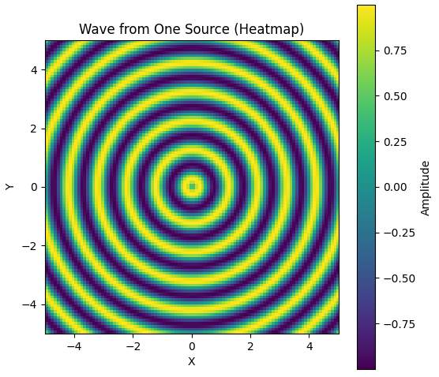
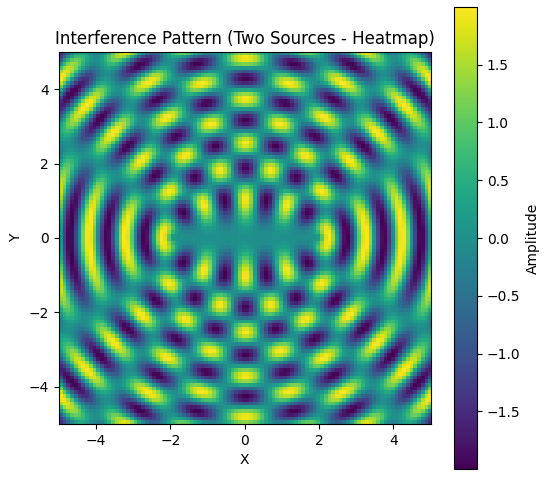

Problem 1
Wave Interference Solution
Step 1: Select a Regular Polygon
Let's choose a square as the regular polygon, with vertices at coordinates \((0,0)\), \((1,0)\), \((1,1)\), and \((0,1)\). Each vertex will have a point source emitting waves.
Step 2: Position the Sources
The sources are placed at the vertices of the square: - Source 1: \((0,0)\) - Source 2: \((1,0)\) - Source 3: \((1,1)\) - Source 4: \((0,1)\)
Step 3: Wave Equations
Each source emits a wave with amplitude \(A\), wavelength \(\lambda\), frequency \(f\), wave number \(k = \frac{2\pi}{\lambda}\), and angular frequency \(\omega = 2\pi f\). The wave from a source at \((x_i, y_i)\) to a point \((x, y)\) at time \(t\) is given by:
- Distance from source to point: \(r_i = \sqrt{(x - x_i)^2 + (y - y_i)^2}\)
- Wave equation: \(\eta_i(x, y, t) = \frac{A}{\sqrt{r_i}} \cos(k r_i - \omega t + \phi)\)
Since all sources have the same phase, we set \(\phi = 0\). Thus, for each source: - Source 1 at \((0,0)\): \(r_1 = \sqrt{x^2 + y^2}\), \(\eta_1(x, y, t) = \frac{A}{\sqrt{r_1}} \cos(k r_1 - \omega t)\) - Source 2 at \((1,0)\): \(r_2 = \sqrt{(x-1)^2 + y^2}\), \(\eta_2(x, y, t) = \frac{A}{\sqrt{r_2}} \cos(k r_2 - \omega t)\) - Source 3 at \((1,1)\): \(r_3 = \sqrt{(x-1)^2 + (y-1)^2}\), \(\eta_3(x, y, t) = \frac{A}{\sqrt{r_3}} \cos(k r_3 - \omega t)\) - Source 4 at \((0,1)\): \(r_4 = \sqrt{x^2 + (y-1)^2}\), \(\eta_4(x, y, t) = \frac{A}{\sqrt{r_4}} \cos(k r_4 - \omega t)\)
Step 4: Superposition of Waves
The total displacement at point \((x, y)\) and time \(t\) is the sum of the waves from all sources:
\(\eta_{\text{sum}}(x, y, t) = \eta_1(x, y, t) + \eta_2(x, y, t) + \eta_3(x, y, t) + \eta_4(x, y, t)\)
So,
\(\eta_{\text{sum}}(x, y, t) = \frac{A}{\sqrt{r_1}} \cos(k r_1 - \omega t) + \frac{A}{\sqrt{r_2}} \cos(k r_2 - \omega t) + \frac{A}{\sqrt{r_3}} \cos(k r_3 - \omega t) + \frac{A}{\sqrt{r_4}} \cos(k r_4 - \omega t)\)
Step 5: Analyze Interference Patterns
- Constructive Interference: Occurs when the waves are in phase, i.e., the path difference \(r_i - r_j\) is a multiple of \(\lambda\). For example, at the center of the square \((0.5, 0.5)\), calculate \(r_i\) from each source to check for constructive interference.
- Destructive Interference: Occurs when the waves are out of phase by \(\pi\), i.e., the path difference is an odd multiple of \(\frac{\lambda}{2}\). This can be observed along lines where waves cancel out.
Step 6: Visualization
To visualize the interference patterns, use Python with Matplotlib to plot the total displacement \(\eta_{\text{sum}}(x, y, t)\) over a 2D grid at a fixed time \(t\). A heatmap or contour plot can illustrate regions of constructive and destructive interference effectively.
import numpy as np
import matplotlib.pyplot as plt
import plotly.graph_objects as go
from matplotlib import animation
from IPython.display import HTML
def create_wave(x, y, source_x, source_y, amplitude, wavelength, time, speed):
"""Creates a wave from a single source."""
distance = np.sqrt((x - source_x)**2 + (y - source_y)**2)
wave = amplitude * np.sin(2 * np.pi * (distance / wavelength - time * speed / wavelength))
return wave
# Define parameters
grid_size = 100
x = np.linspace(-5, 5, grid_size)
y = np.linspace(-5, 5, grid_size)
X, Y = np.meshgrid(x, y)
source_x, source_y = 0, 0
amplitude = 1
wavelength = 1
speed = 1
time = 0
# Generate wave data
wave_data = create_wave(X, Y, source_x, source_y, amplitude, wavelength, time, speed)
# Plotting (Heatmap)
plt.figure(figsize=(6, 6))
plt.imshow(wave_data, extent=[-5, 5, -5, 5], origin='lower', cmap='viridis')
plt.title('Wave from One Source (Heatmap)')
plt.xlabel('X')
plt.ylabel('Y')
plt.colorbar(label='Amplitude')
plt.show()
# Plotting (3D)
fig = go.Figure(data=[go.Surface(z=wave_data, x=x, y=y, colorscale='viridis')])
fig.update_layout(title='Wave from One Source (3D)',
scene = dict(
xaxis_title='X',
yaxis_title='Y',
zaxis_title='Amplitude'))
fig.show()


def create_interference(x, y, sources, amplitude, wavelength, time, speed):
"""Creates interference pattern from multiple sources."""
total_wave = np.zeros_like(x)
for source_x, source_y in sources:
total_wave += create_wave(x, y, source_x, source_y, amplitude, wavelength, time, speed)
return total_wave
# Define parameters for two sources
sources_two = [( -2, 0), (2, 0)] # Source positions
time = 0
# Generate interference data
interference_data_two = create_interference(X, Y, sources_two, amplitude, wavelength, time, speed)
# Plotting (Heatmap)
plt.figure(figsize=(6, 6))
plt.imshow(interference_data_two, extent=[-5, 5, -5, 5], origin='lower', cmap='viridis')
plt.title('Interference Pattern (Two Sources - Heatmap)')
plt.xlabel('X')
plt.ylabel('Y')
plt.colorbar(label='Amplitude')
plt.show()
# Plotting (3D)
fig = go.Figure(data=[go.Surface(z=interference_data_two, x=x, y=y, colorscale='viridis')])
fig.update_layout(title='Interference Pattern (Two Sources - 3D)',
scene = dict(
xaxis_title='X',
yaxis_title='Y',
